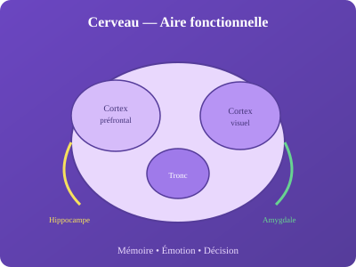

Psychologie biologique
Psychologie biologique (neurosciences)

Avons-nous bien cinq sens ?
Non. Nous avons au minimum : vue, ouïe, toucher, goût, odorat, plus proprioception (position du corps), vestibulaire (équilibre), nociception (douleur), thermoréception (température).
Travaillons-nous mieux sous la pression ?
La loi de Yerkes-Dodson : performance optimale à arousal modéré. Trop peu de stress = ennui ; trop = anxiété paralysante. La courbe est inversée pour les tâches complexes.
Comment les drogues font-elles planer ?
Les substances psychoactives modulent les neurotransmetteurs :
| Substance | Mécanisme | Effet |
|---|---|---|
| Dopamine (cocaïne) | Bloque recapture | Euphorie, addiction |
| Sérotonine (LSD, MDMA) | Agoniste/modulateur | Altération perception |
| GABA (alcool, benzodiazépines) | Agoniste | Sédation, anxiolyse |
| Glutamate (Kétamine) | Antagoniste NMDA | Dissociation |
Comment reconnaître un visage ?
Le fusiform face area (FFA) dans le cortex temporal inférieur est spécialisé dans la reconnaissance faciale. La prosopagnosie (face blindness) démontre cette spécialisation.